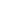

R. E. M.
HISTORY
On April 5th,1980 REM were formed in Athens, Georgia (USA).
In 1981 the band recorded its first EP, Chronic Town, and the following year signed a contract with I.R.S.
Thw first album, Murmur, was released in 1983.
IN 1987 R.E.M. published Document, obtaining considerable success.
In 1988 R.E.M signed a new recording contract with Warner Bros Records, and in the same year they released the album Green.
In 1991 they released the album Out of Time, their most successful album, which sells 18 million copies.
In 1992 they released Automatic for the People which sold 17 milion copies. In 1994 the album Monster, another success with over 10 milion copies sold, followed in 1996 by the album New Adventures in Hi-Fi.
Bill Berry left the band in October 1997.
In 1998 R.E.M. released Up, the first album without Bill Berry as the drummer of the band, followed by the albums Reveal (2001), Around the sun (2004) and Accelerate (2008).
On September 21st, 2011, R.E.M disbanded by mutual agreement with an official announcement on their website, shortly after they released their latest album, Collapse into now.
DISCOGRAPHY
The IRS's years (1983 - 1987)
International success (1988 - 1996)
REM as a trio (1998 - 2011)
NOTES
The acronym R.E.M. stands for rapid eye movement, the dream phase in which one dreams.
R.E.M. wrote the instrumental score to the Andy Kaufman biographical film Man on the Moon, a first for the group. The film took its title from the Automatic for the People song of the same name.
In 2007, the band was inducted into the Rock and Roll Hall of Fame, in their first year of eligibility.
In their thirty-year career they have sold approximately 85 million records.